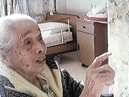

昔は映画もなく芝居小屋が年に一度か二度、広い空地に出来てゐた。私共の家庭には芝居見物など縁のうすいものであつた
御正忌様に輕業（サーカス）やら映画辨士のついた活動冩眞である見世物小屋が出来て毎日一週間はたのしい時であつた。サーカスを四五人の連れとさじきの上から見た高いブランコの空中藝当馬の上でさか立になる。それに高いところで楽隊をやる。面白くて目を皿の様にして見た面白くてしばらくは頭の中から離れないしつかり焼ついてゐるのである。その様な時代であつたおかげでお寺には毎日お説教があつてゐた。夜は早く仕事をしまつて父達一家はお寺まいりをしてゐた。其のお蔭で私も幼い頃からお寺には縁が深く仏様の御恩の程を聞かせて頂いた。有難い事である。
聞けばきく程、み仏の御恩がわかり聞かずには居られなくなつた。娘時代もよくおまいりをした。お陰で今もひまを見つけてはお聞かせにあづかつてゐる。願うらくは若い者共にみ仏の広大無辺のみ教えを若い者達に聞かしたいのである。この世もあの世も家族一緒にゆき度いのにとそう思うと自分の努力が足りないことを反省させられる毎日である。
| ばあちゃんの食いもん |